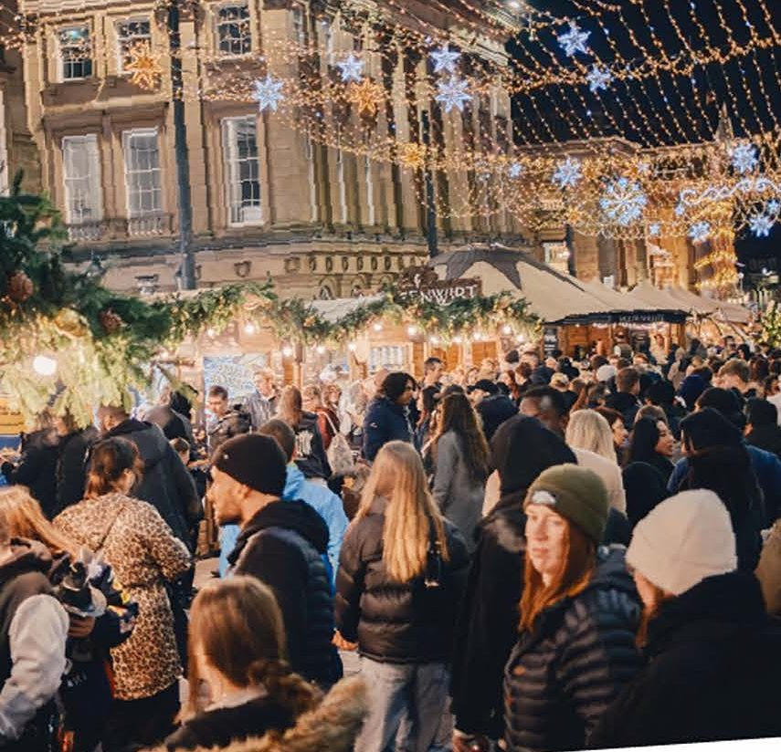
Our proposal to run @newcastleschristmas on Instagram, TikTok and Facebook from 2 November 2026 to 3 January 2027: a Newcastle agency in the city centre three to four days a week, two creators and two faces on camera, 125-plus videos across the season, every stall on the market given its moment, and formats designed to be shared far beyond the city.
Hi Rachel,
We're Fusion Creative, a content marketing agency based in Newcastle. We work with loads of businesses across the North East, mostly independents: restaurants, bakeries, cafes, retailers and a Northumberland candle brand that ships nationwide. We film everything ourselves, in person, and we're on Grey Street most weeks anyway. Running Newcastle's Christmas is the job we'd pick if we could pick one.
The reason we think we're the right fit is simple. The market is 60-plus small businesses on four streets, and small businesses are exactly what we've spent the last two years growing on Instagram and TikTok. The accounts we've run have passed 250 million views between them, one reel alone at 70 million. The skits get the headlines, but the straight food and product showcases, the kind of video every trader will get, sit between 16,000 and 90,000 views each. One independent restaurant in Heaton has gone from a standing start to 87 million views, and its owner says weekly sales went from 8 to 10 thousand to over 14 thousand. We know what makes a Geordie share a video, and we know how to turn that share into someone walking through the door.
Here's what we'd bring to the channels. We're on site three to four days a week across the contract, on every required date, and nobody has to prompt us to be somewhere. Two creators, so the account has two faces on camera rather than one person for nine weeks. 125-plus videos across the season, two to three a day through the market weeks. Every single trader featured at least once, with a numbered series people will want to follow to the end. Public-interaction formats, giveaways and trend adaptations built to travel outside the region, alongside the clear "what's on, where and when" content your audience relies on. Same-day turnaround, community management from 8am to 10pm, and a weekly one-page report with a live dashboard behind it.
Our goal for Newcastle's Christmas is a minimum of 10 million views and impressions across the campaign, more than double what the 2025 campaign generated, and the numbers on the next page are why we think that is realistic. We've laid all of it out in the pages that follow, including 36 named concepts, the output plan by phase, our reporting approach and confirmation that we're available for every required date. One date to flag: we're away from 5 to 12 October, so we'd ask for an interview or presentation slot from 13 October onwards.
Thank you for reading. We'd love to help make this the most-watched Christmas market in the North.
Every account we run is an independent business in the North East, filmed in person by us. Our work has been venue and hospitality led rather than destination campaigns, and we'd rather say that plainly: the market is 60-plus hospitality and retail businesses on four streets, which is exactly our lane. Figures as of 2 September 2026. NE1 and the Council would have a login to our analytics platform from week one.
Segmented on purpose. The skits get the headlines, but the market will mostly need straight product and place videos, so those are here too, with their numbers. Every video links to the live post. View counts as published on Instagram and TikTok on 2 September 2026.
The eight biggest of the 20 we've had past 100,000 views.
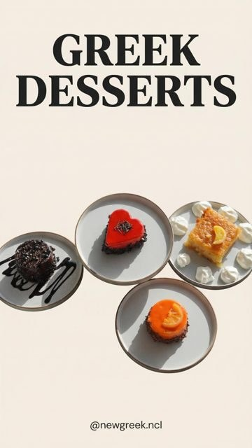
70.1M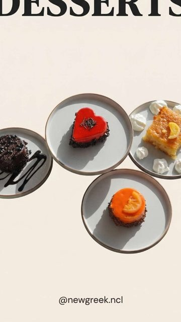
7.1M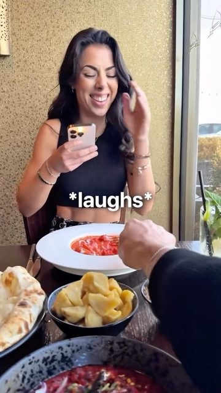
3.6M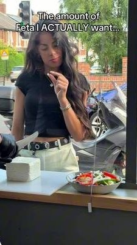
3.3M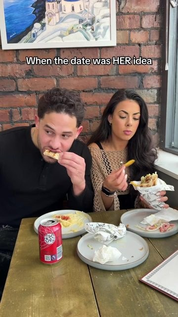
857K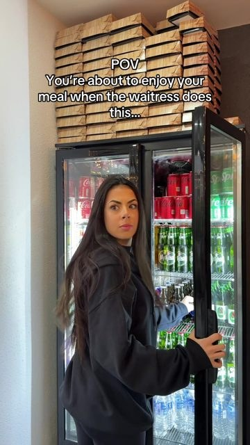
827KThe formats behind 14 of the 36 concepts: a challenge with a prize, a street interview, a quiz.
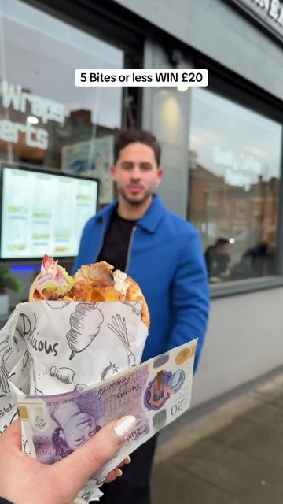
255K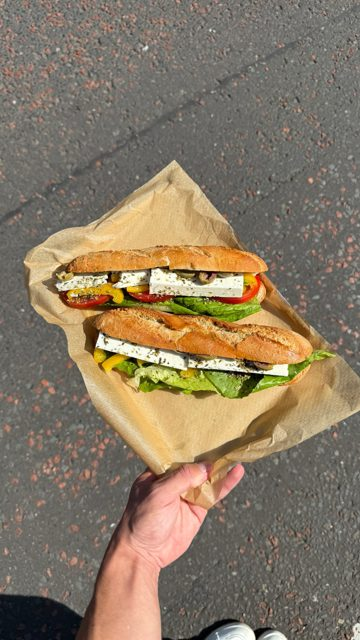
91K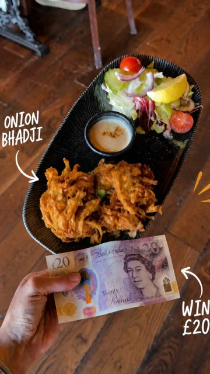
83K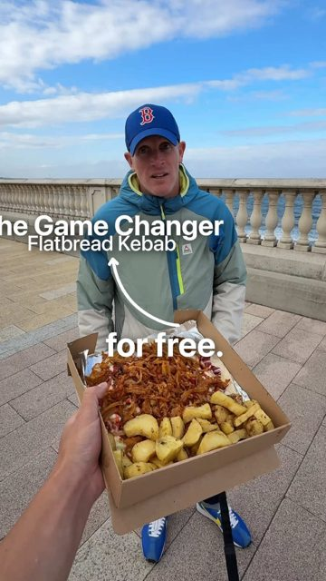
28KNo joke, no cast, just the dish, the product or the place done well. This is what every trader video will look like, and on small independent accounts these sit between 16,000 and 90,000 views each.
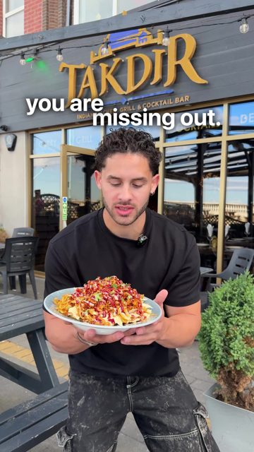
89K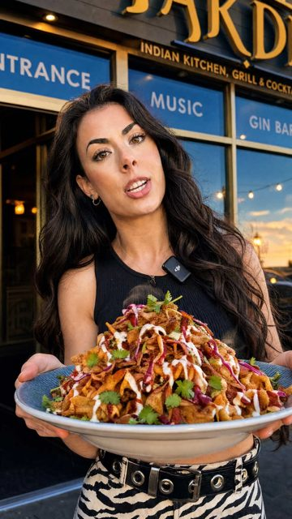
84K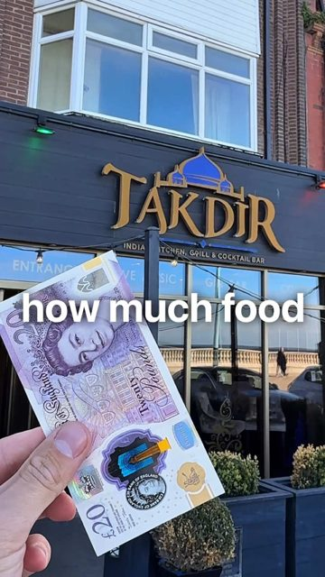
72K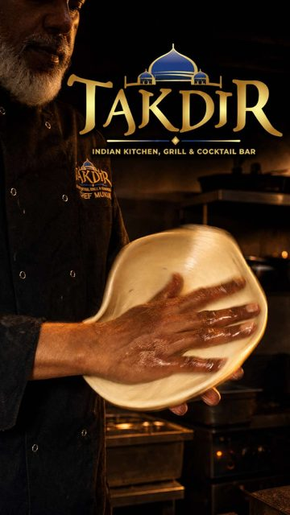
67K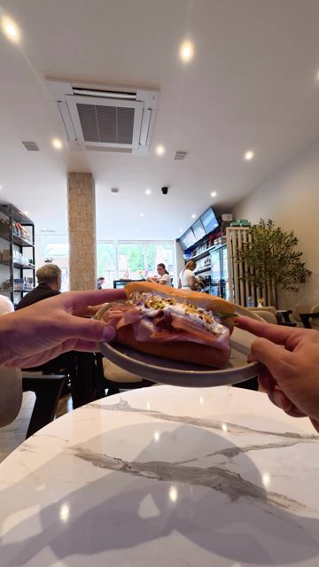
65K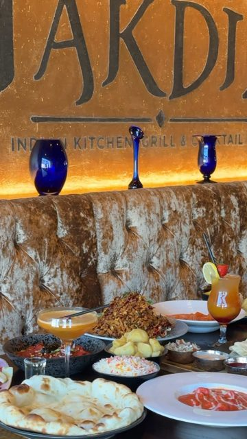
60K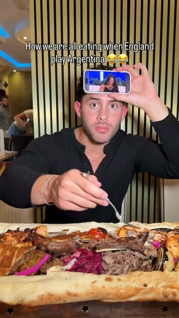
53K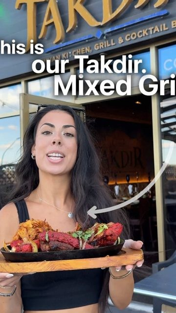
49K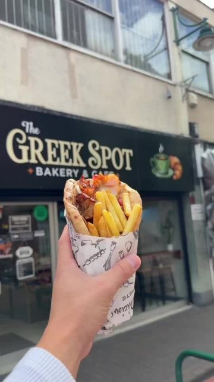
39K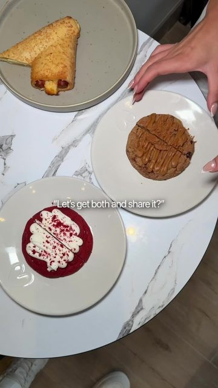
29K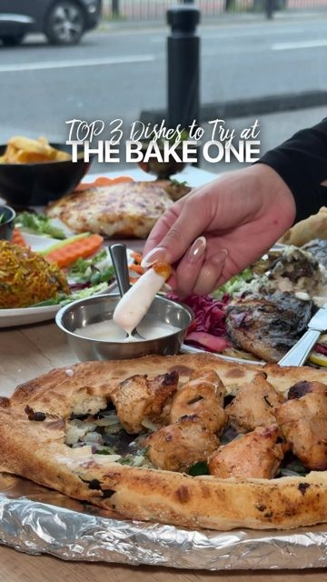
16KAn independent restaurant that had never had a video pass a few thousand views. We built a planned engine around the people rather than the plates: skits with a big text line, games, public reactions. 87 million views later, the owner's words: "We was making 8k to 10k, now is more than 14k weekly."
The same engine, a different venue and cuisine, with the top videos at 3.6 million and 3 million. It proved the formats travel: the cast and the concept move, the location changes. The market is 60-plus locations.
A gifting brand, which is what half the market's traders are. On their Shopify figures, content plus paid social took them from £6,650 a month to six figures a month in two months this summer. Evidence we can make product content that sells, not just content that gets watched.
Newcastle's Christmas is one of the biggest festive events in the UK. Its social accounts are still small. That gap is the whole opportunity, and it's a good problem to have: the hard part (2 million people turning up) is already solved.
Sources: the role brief on getintonewcastle.co.uk, the 2026 Trader Pack on newcastleschristmas.com, and the public follower counts on 2 September 2026.
Our goal for the season: a minimum of 10 million views and impressions across the campaign. That is more than double the 4.5 million social impressions the 2025 campaign generated, and it is the number we'd want to be measured against. Behind it sits the real aim: make @newcastleschristmas the most-watched Christmas market account in the UK this winter, and turn that attention into visits, clicks to newcastleschristmas.com and sales at the stalls.
We're on site three to four days a week, evenings and weekends included, with two creators and two faces on camera rather than one. We don't wait to be sent somewhere: on shoot days, if the lights are going on, a queue is forming or a trader has just sold out, we're already filming.
A numbered "Stall 1 of 60" series, one or two traders a day, until every stall has been featured. Plus a shortlist filmed in their own workshops before the market opens.
Public interaction, games, giveaways and trend adaptations are the formats that get shared beyond the city. The atmosphere videos and the "what's on" guides give that reach somewhere to land.
The brief asks for daily or near-daily output. We'd go well past that. We expect to share 125-plus videos across the 63-day contract: one to two a day in the build-up, two to three a day from market opening through to 23 December, one to two a day over the festive close to 3 January, plus a weekly guide. None of it is filmed on the day and hoped for. Every week is planned on the Friday before: which traders, which formats, which partner moments, which trend, which giveaway, and which theme each video serves.
| Campaign theme | What we'd make | Share of output |
|---|---|---|
| 1. The Christmas Market Drive footfall into the market | Trader series, first sale of the day, sold-out alerts, Golden Bauble, Advent giveaways, public-interaction games at the stalls, Moosenwirt and North Pole moments, Christmas Village family content | 55% |
| 2. City centre experiences The wider festive offer | Fenwick window, panto and theatre, skating, festive dining, Grainger Market link via Nelson Street, shopping guides, New Year's Eve | 25% |
| 3. Newcastle as the destination Regional and national reach | "Is it worth the trip?" vox pops, 48 hours in Newcastle, Grey Street at dusk hero videos, furthest-traveller leaderboard, train-to-market itineraries | 20% |
Every video, whichever theme, ends with the same action: plan your visit at newcastleschristmas.com. The link sits in bio and in every caption, and is tagged so we can report clicks.
Grouped by the job each one does. Most have already worked for us on other accounts; the rest are built for this market specifically. We'd expect to run around 25 of these across the season and keep the rest as weather and opportunity dictate.
A shopper has one go at pronouncing a trader's product (the German name on the Moosenwirt board, a Northumbrian cheese, a Greek pastry). Get it right, it's on us; get it wrong, the trader teaches them and they buy it anyway.
Why it travels: our "if you can pronounce it, it's free" format is one of our most repeated hits.
We buy a stranger's hot chocolate. They choose who gets the next one. We follow the chain down Grey Street until it breaks. Kindness content tends to be shared heavily in December.
Why it travels: warm, human, wildly shareable, and it showcases three or four drinks traders in one video.
Asked at the Monument all season. The answers pinned to a map on screen. Doubles as evidence for the destination story and feeds the furthest-traveller leaderboard.
Why it travels: everyone looks for their own town in the comments.
Geordie honesty under the Grey Street lights, recut into a montage. The tens and the sevens both get laughs.
Why it travels: local pride plus the one grump who says "six" is the comment bait.
Children leaving the Christmas Village grotto, with a parent on camera and a signed consent. The answers are the content. In our experience parents share these more than any other format.
Why it travels: the brief's "child meeting Father Christmas" moment, captured properly.
A shopper gets a tenner and sixty seconds to find the best gift on the market. Whatever they pick, that trader gets the spotlight. Repeat weekly with a different brief: for mam, for a colleague, for a dog.
Why it travels: fast, visual, and it sells the idea that the market is for real gift shopping.
Show a handmade piece, get three passers-by to guess, reveal, then meet the maker. Cheaper than they thought or dearer than they thought, both make people comment.
Why it travels: "guess how many" and price-reveal formats consistently outperform straight product videos for us.
A light accent and vocabulary test at the Monument. "What's a stottie?" Winners get a mulled wine. Affectionate, never mocking.
Why it travels: local identity content is among the most-shared content we see in the North East.
From 1 December, 24 days, 24 trader prizes, one drawn every day. Entry: follow, comment, tag who you'd bring. We'd ask traders to donate the prize alongside their feature video, aiming for a nil prize cost.
Why it works: a daily reason to check the account for 24 days straight is how follower counts move.
Every Saturday one bauble is hidden somewhere on the market. The clue drops at 10am on all three channels. Finder brings it to a named stall and wins a market bundle. We film the hunt and the winner.
Why it works: a footfall driver you can aim at the time and the zone you choose.
A weekly £50 market voucher for the best visitor video posted with the campaign hashtag and tagging the account. Reposted with credit. Turns visitors into a second camera crew.
Why it works: a steady flow of user content to repost on the days weather beats us.
A branded wheel at a different stall each week. Spin on camera, win something from that trader. Cheap to build, endlessly repeatable, and it puts a crowd round the stall.
Why it works: across the 859 posts we've measured on our own accounts, games have the highest median views of any format we run.
Nominate a nurse, teacher, carer or volunteer in the comments. Each week one wins a night at the market: Moosenwirt table, skating, hot chocolate, a gift from a trader. We film the surprise.
Why it works: nominations are comments, comments are reach, and the surprise video is the emotional peak of the week.
From the "where have you travelled from" vox pops. Weekly winner gets a hamper. Proof, on camera, that people cross the country for this.
Why it works: makes the national destination claim in the visitors' own words.
All promotions run to Meta and TikTok promotion rules with short terms hosted on newcastleschristmas.com, which also sends entrants to the website. We'd agree prize sourcing with NE1 and the traders in October so nothing is left to chance.
The backbone. One or two traders a day, 30 to 45 seconds each, same opening line every time: "Stall number 14 of 60 at Newcastle's Christmas Market is..." Posted as an Instagram Collab so it lands on the trader's profile too. The number in the title follows the final trader list.
Why it works: numbered series drive follows because people want to see them all, and traders have every reason to share their own.
Eight to ten traders filmed at their own kitchen, studio or workshop in the first fortnight of November, prepping for the market. Released as countdown content before opening day.
Why it works: the brief asks for traders in their business setting, and it gives us launch content before there's a market to film.
10am on shoot days, a different stall each time: the first customer of the day opens that trader's video. A tiny, warm, repeatable moment that also reminds people the market opens at ten.
Why it works: rituals become habits for the audience.
The trader's own pick, in one sentence, straight to camera. Fifteen seconds. We can shoot ten of these in a morning and drip them through the week.
Why it works: answers the only question shoppers actually have.
Two traders try each other's product and give an honest verdict. Cheese meets chutney, candle meets fudge. Both get featured, both share it.
Why it works: two audiences for the price of one video.
The moment something sells out, a ten-second video with the time. "Gone by 2pm, back tomorrow at ten." Scarcity is the most honest footfall driver there is.
Why it works: people plan their visit around it.
Our 70-million-view format, reset at the market. Relatable, physical comedy with a big text line across the top of frame, no dialogue needed.
Why it travels: in the same 859-post data, skits average four times the median views of straight product videos.
The one who's "just having a look" with six bags. The planner with the spreadsheet. The dad by the Moosenwirt. Everyone tags the friend who is that person.
Why it travels: tagging a mate is the share.
Price-comparison format. The bratwurst, the stein, the strudel, all here, no passport. Repeat with Copenhagen versus the craft stalls, Lapland versus the North Pole igloos.
Why it travels: our "flight versus dish" format has worked on all three accounts we've run it on.
Hands full of bags, one more stall. Thirty seconds, trending audio, the caption does the work.
Why it travels: everyone has done it.
The 3.30pm to 4.30pm switch as the lights come on, shot from the same spot every week, cut as a single transition. The one video we'd expect to be lifted by national accounts.
Why it travels: the brief's "sparkle of the markets after dark", made into a repeatable hero shot.
An 8am scan of TikTok and Reels every day; anything that fits is shot on the next shoot day, with the market as the set, and posted within 24 hours of filming. Christmas audio cycles fast, so we move fast.
Why it travels: the algorithm rewards the format it's already pushing.
A market dog filmed every shoot day, cut into a weekly compilation video. Low effort, reliably popular, and it says the market is dog-friendly without saying it.
Why it travels: it's a dog in a Christmas jumper.
Every Monday: one video covering the market, the Christmas Village, theatre, skating, dining and any partner events, posted on all three channels and pinned to the top of the profile all week.
Itineraries by visitor type: three hours off the train, a full day with kids, date night, the shopping trip, the Sunday wander. Each one a short video.
The four market zones and the Christmas Village explained in one video, plus opening hours, quiet times, toilets, card payments and accessibility. Pinned to the profile.
Rain day? Here's the covered route and the indoor bits. Thursday late night? Reminder at 4pm. Quick, useful, timely posts that earn trust.
A daily countdown video in the run-up to opening: the chalets going up, the lights being tested, the traders packing. The account is warm before the first customer arrives.
Asked only of visitors from outside the region: Leeds, Edinburgh, Manchester, Carlisle. Their answer, in their accent, is the ad.
A four-part series: arrive and the market, the Fenwick window and shopping, panto and dinner, the Quayside and skating. Cut for people deciding on a weekend break.
The cinematic atmosphere video, re-cut every week with new footage and the current what's-on. Alongside the day-to-night transition, the piece we'd expect press and national accounts to share.
Fenwick, Theatre Royal, Tyne Theatre, the skating rink, Grainger Market, Quayside venues: co-created videos agreed through NE1 so partner activity and our content point in the same direction.
Three phases, one rhythm. Output steps up when the market opens and stays high until it closes.
| Phase | Dates | Videos per day | Focus | Approx. videos |
|---|---|---|---|---|
| Pre-launch | 2 to 18 Nov 17 days | 1 to 2 | Traders in their workshops, chalet build time-lapses, the 12 November event, countdown content to the 19 November opening, team introduction, evergreen bank for wet days | 25 |
| Market live | 19 Nov to 23 Dec 35 days | 2 to 3 | Stall 1 of 60 daily, public interaction, Advent giveaways, Golden Bauble Saturdays, trend adaptations, What's On Mondays, city experiences, destination videos | 85 |
| Festive close | 24 Dec to 3 Jan 11 days | 1 to 2 | Christmas message, Boxing Day and sales guides, panto and skating, New Year's Eve coverage on 31 December, season wrap and thank-you to traders | 15 |
| Season | 63 days | Plus weekly guides and community management throughout | 125+ |
Every video goes out on all three platforms. That is 125-plus videos in total across the season, not per channel, with every one of them uploaded natively to Instagram, TikTok and Facebook, because the same piece of content posted three times has three times the chance of being seen. What changes is how it's posted, not what's in it.
| Platform | How it's posted | Weekly output |
|---|---|---|
| Home of the account. Native Reels upload, the trader tagged and invited to Collab so the video lands on their profile too, caption and hashtags tuned for Instagram, link in bio to newcastleschristmas.com. | 14 to 21 videos a week · Collab tag on every trader video | |
| TikTok | The same videos, uploaded natively with TikTok's own audio and text tools, the numbered trader series kept as a playlist, hashtags tuned for TikTok search. | The same 14 to 21 videos · series playlists |
| The same videos, uploaded natively as Reels, with the caption carrying the practical detail (hours, zones, travel) that families and over-35s look for, and the place customer questions get answered. | The same 14 to 21 videos · comment and message cover |
| Day | Anchor content | Alongside |
|---|---|---|
| Monday | What's On this week video | Two stalls, trend scan |
| Tuesday | Public-interaction video (pay it forward, guess the price, say it right) | Two stalls, one opening with the first sale of the day |
| Wednesday | City experience video (Fenwick, theatre, skating, dining) | Two stalls |
| Thursday | Key Worker Thursday surprise, with the late-opening reminder in its caption | Two stalls |
| Friday | Grey Street at dusk hero cut, with the weekend preview and the week's destination vox pops | Stall of the day |
| Saturday | Golden Bauble clue video at 10am | Two stalls, the second closing with the bauble winner at the named stall |
| Sunday | Christmas Village and family content with the week in review | Two stalls |
The numbered series runs at one or two stalls a day, around thirteen a week, so every one of the 60-plus traders is featured before 23 December. From 1 December the Advent draw is announced in that day's first video. Posting windows: 12pm and 6pm every day, the weekly guide at 8am on Mondays. We shift the schedule when a partner moment or a trend needs it.
Speed comes from being there, having a plan, and not needing anyone's permission for the routine stuff. Here's how we'd work.
Traders booked, formats chosen, giveaways confirmed, partner moments in the calendar, trend list drafted. Shared with NE1 as a one-page grid.
Fifteen minutes on TikTok and Reels for anything worth adapting, and the day's posts checked before the market opens.
Phone and mirrorless, gimbal, wireless mics, small light for after dark. Vertical first, always captioned. Public-interaction formats are hosted straight to camera on a gimbal and wireless mic so the conversation feels natural.
Edited on a laptop in the city, in the Newcastle's Christmas brand: your navy and yellow, your logo end card, consistent text style. Time-sensitive pieces go straight out.
The same video uploaded natively to Instagram, TikTok and Facebook, trader tagged and Collab invited, caption tuned for each platform, link in bio updated when the video points somewhere specific.
Replies, questions answered, customer service escalated. Then the next day's plan checked.
We have no periods of unavailability between 2 November 2026 and 3 January 2027, evenings and weekends included. Before the contract, the one date to note is 5 to 12 October, when we're away, so any interview or presentation from 13 October works for us.
Kick-off with the team, access to the accounts, trader list and workshop shortlist agreed, brand templates built, giveaway terms drafted, partner calendar mapped.
Trader workshop videos begin. Countdown content starts on all three channels.
On site for the full event, same-day video, plus a follow-up cut the next morning.
From build in the morning to the first customers and the lights at dusk. Three videos that day: the doors opening, the first stalls, the evening atmosphere. The two-to-three-a-day market rhythm starts here.
Both days, open to close. First Golden Bauble hunt on the Saturday, Christmas Village family content on the Sunday, and the market rhythm of two to three videos a day in full swing.
Twenty-four days of daily trader giveaways.
Sit-down with the team on performance so far, what to double down on for the final fortnight.
Thank-you video to the traders, season highlights reel.
Full evening coverage of the city's celebrations, a countdown video at midnight and the recap posted on 1 January.
Final report delivered by 8 January, with every asset handed over in an organised library.
| Partner | How we'd work together |
|---|---|
| Newcastle NE1 | Day-to-day contact, weekly plan and report, approvals group, partner introductions, accreditation. We'd treat the NE1 team as the editor of the account. |
| Newcastle City Council | Council messaging, safety and travel updates, civic moments, anything that needs an official voice. We amplify, never improvise. |
| EVNT Inspirations | The Christmas Village on Old Eldon Square, the Moosenwirt and the North Pole at Monument. Weekly slot for their content, their activations built into our giveaways, their schedule in our What's On. |
| The traders | Every one of them featured, tagged and invited to Collab. A trader WhatsApp broadcast so they know when we're coming and get their video to share the same day. |
| City partners | Fenwick, the theatres, the skating rink, Grainger Market, Quayside venues and festive dining: co-created content agreed through NE1 so the wider offer gets its share of the story. |
We'd propose a WhatsApp group with NE1, the Council and EVNT Inspirations. Routine content (trader features, What's On, atmosphere videos) goes out without sign-off against agreed guidelines. Anything partner-sensitive, anything involving the Council's own messaging, and every giveaway gets a 30-minute approval window. If something changes on the ground, weather, an event cancellation, a safety message, we confirm with the team and post the update within the hour.
Doing it properly. Signed consent for anyone featured at length, a parent on camera for any child, captions on every video for accessibility, alt text on stills, promotions run to platform rules with published terms, and NE1 accreditation visible on site so traders and security know who we are.
You'd never have to ask how it's going. We run a live analytics dashboard for every account we manage, and NE1 and the Council would have a login from week one.
| Metric | Why it matters |
|---|---|
| Followers (net new, by platform) | The brief's first success measure. Reported weekly against target. |
| Reach and impressions | How many people saw Newcastle's Christmas this week, and how many of them were outside the region. |
| Video views and watch time | Per video, per format, so we double down on what works. |
| Engagement rate, shares and saves | Shares are the travel metric. Saves mean someone is planning a visit. |
| Website clicks | Tagged links in bio and captions, so clicks to newcastleschristmas.com are counted and attributed to the video that sent them. |
| Profile visits | The leading indicator of follows: how many people went looking after a video. |
| Traders featured | Running count against the full trader list. Target: every single one. |
| Community | Response time, enquiries handled, escalations, sentiment and the recurring questions worth answering in content. |
The first is our minimum goal for the campaign. The second is the coverage promise that sits behind it. Both reported honestly every week.
You're not booking one person. Newcastle's Christmas gets two creators and two faces on camera: a host for the public formats, a second face fronting the trader and family content, two styles of content, and cover for each other so the output never stops.
Runs Fusion Creative. Plans the week, hosts the public-interaction formats, manages the partners and writes the report. Your single point of contact.
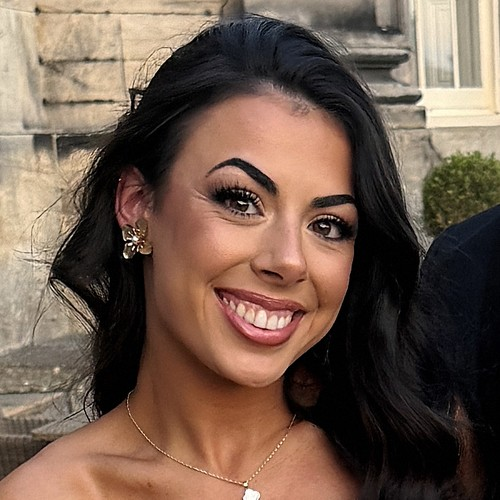
Films and edits alongside Jay and fronts the trader and family content, so the account has a second face and a second voice.
Backed by our editing team for overflow days, so a big Saturday doesn't hold up Sunday's output.
A Newcastle content marketing agency that films in person, works with loads of independent businesses across the North East, and measures itself on what happens after the view: the visit, the click, the sale.
We're away from 5 to 12 October, so we'd ask for an interview or presentation slot from 13 October onwards. Any questions before then, just call.